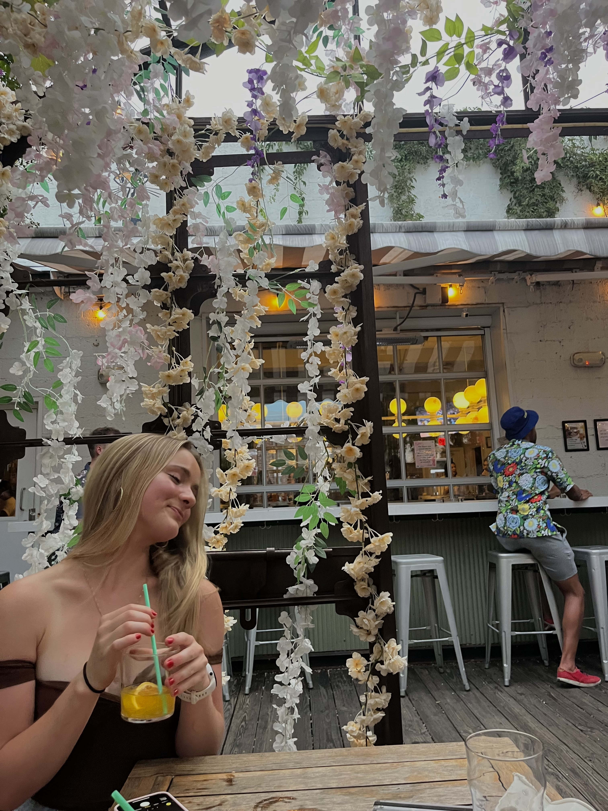

A Brief Introduction
I am a student at the University of Wisconsin-Madison, where I am double majoring in History and Information Science.
I grew up in New Jersey, but now live in between Chicago, New York City, and Washington, D.C., when I am not at school in Wisconsin. I love getting to experience living in all of these wonderful cities.
I have a wide variety of interests, including traveling, attending concerts, running, and trying new restaurants. More information on each of these hobbies of mine is available throughout this website.
I have an amazing family and incredible friends.
